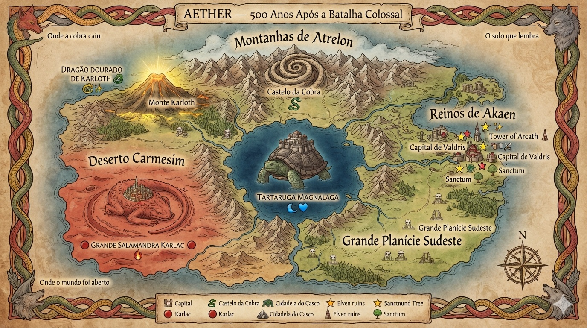

← Grimório
🗾 Aether — 500 Anos Após
−
100%
+
↺

🏔
Montanhas de Atrelon
☠☠☠☠
🏜
Deserto Carmesim
☠☠☠
🌿
Grande Planície Sudeste
☠☠
🏛
Reinos de Akaen
☠☠
💧
Grande Lago Central
☠☠☠
🐍
Castelo da Cobra
☠☠☠☠
🌋
Monte Karloth — Dragão Dourado
☠☠☠☠☠
🐢
Tartaruga Magnalaga
☠☠☠☠
🦎
Grande Salamandra Karlac
☠☠☠☠☠
⭐
Capital de Valdris
🔮
Torre de Arcath
✝
Sanctum
🏘
Margem das Pedras ★ início
Legenda
Região
Cidade
Chefe / Criatura
Local Sagrado
📍
—
✕